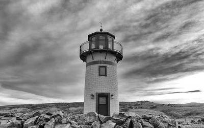
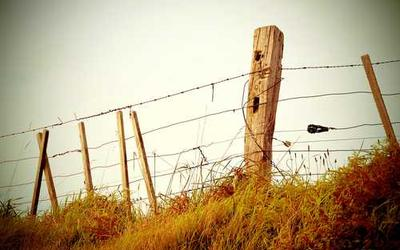
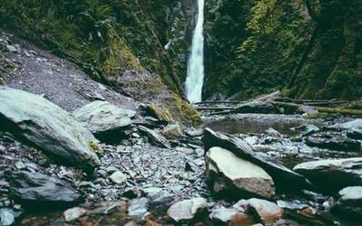
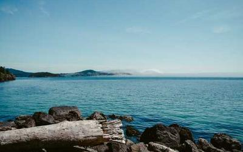

GALERIA DE IMAGENS GERADAS

Farol em P/B com céu nebuloso

Cerca antiga no campo
Ponte de Manhattan iluminada
Vista lateral de Mykonos

Cachoeira cercada de mata

Mar azul e as pedras
| IMAGEM GERADA | DESCRIÇÃO | DATA DE CRIAÇÃO |
|---|---|---|
| Farol em preto e branco com céu nebuloso | 20/05/2025 | |
| Cerca antiga com campo esverdeado | 22/05/2025 | |
| Ponte de Manhattan iluminada | 22/05/2025 | |
| Vista lateral da ilha de Mykonos | 22/05/2025 | |
| Cachoeira cercada de mata verde | 22/05/2025 | |
| Mar azul e pedras em primeiro plano | 22/05/2025 |